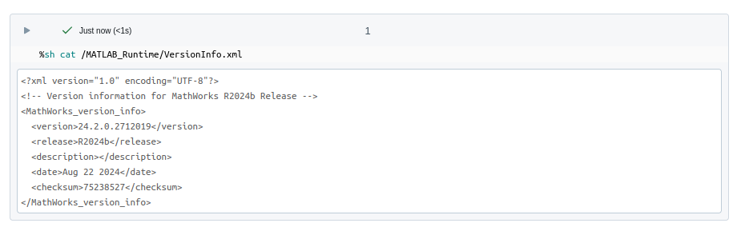

Init script customization
From v6.0.0 the use of init scripts is deprecated and Docker® is now the preferred, and in some cases required, way to deploy the MATLAB® runtime to a databricks cluster. See: Container Services & https://github.com/mathworks-ref-arch/matlab-on-databricks/tree/main/resources/dockerfiles/runtime
A future release will remove support for init scripts.
When must Docker be used? / When can init scripts not be used?
From version 7.0.0 init scripts cannot be used on clusters without internet access and docker images must be used.
For Databricks® Runtime 17.x and later Docker images must be used.
Setup
A template init script file can be found here: Software/MATLAB/script/runtime_install.sh.
At setup put the init script in the *interface directory*/runtimes/
directory e.g. /Volumes/main/default/myvolume/MathWorks/runtimes/runtime_install.sh.
Init scripts can still be stored in Workspaces, however Databricks recommends using
/Volumes. An init script is a bash script.
Init script configuration, used if Docker is not an option
If working from within MATLAB createDatabricksCluster() can be used to configure
init scripts for a databricks.Cluster object.
useMATLAB=true currently uses init scripts, this will change in the future to adopt a docker based approach by default.
cl = createDatabricksCluster("myClusterName", 2, useMATLAB=true, updateClusterId=true);
The enableLogging=true argument enables logging. From v5.0.0 the default
logging directory is dbfs:/cluster-logs. Logging is optional.
/Volumes paths are also supported with some restrictions and recommended.
Manual init script configuration
This is generally not necessary. An init script can be uploaded to a Workspace manually as follows:
ws = databricks.Workspace;
% If a directory does not exist provide one, default shown
ws.mkdirs('/Users/username@example.com/MathWorks/<version>/runtime/')
ws.import('path', '/Users/username@example.com/MathWorks/<version>/runtime/runtime_install_custom.sh',...
'format', 'AUTO',...
'file', '/mylocaldir/runtime_install_custom.sh',...
'overwrite', true)
Use the Files API to upload to /Volumes.
To trigger the installation of the runtime on initialization, this script is
attached to the init_script request parameter of the cluster object.
Init scripts run on Linux®, therefore the line endings are pertinent. Failure to use the proper line endings (LF) instead of (CRLF) will result in the init script failing. This is particularly important if the script is being edited on a Windows® machine.
The init scripts are be automatically executed at cluster creation time. When a cluster with an InitScriptInfo object is created, Databricks will run the commands in the initialization script. The status of the initialization scripts can be seen in the event log for the cluster. For the detailed output of the scripts themselves configure a log delivery location. For example:
% Create a new cluster and handle to DBFS
ws = databricks.Workspace;
cl = databricks.Cluster;
% Specify an init script
is = databricks.InitScriptInfo;
wsi = databricks.datastructures.WorkspaceStorageInfo('/Users/username@example.com/MathWorks/<version>/runtime/runtime_install_custom.sh');
is.setDestination(wsi);
% Check if the file exists
status = ws.getStatus('/Users/username@example.com/MathWorks/<version>/runtime/runtime_install_custom.sh');
% Configure it
cl.cluster_name = ['TestCluster', datestr(now)];
cl.setNumWorkers([2 10]);
cl.setInitScriptInfo(is);
% Create a cluster
cl.create();
Validation of the runtime installation
A completed installation can be checked from a notebook. To do so, attach a notebook to the cluster and use the language magic command feature of the notebook to query the runtime state.
For example:
%sh cat /MATLAB_Runtime/VersionInfo.xml

Using Custom Container services
The MATLAB Runtime can be installed using the custom container services, see [Docker Runtimes](Docker Runtimes.md).
MW_RUNTIME_RELEASE
If creating a custom cluster setting a Spark™ environment variable MW_RUNTIME_RELEASE to indicate the MATLAB Runtime release version supported by a give cluster is recommended. The enableMATLABRuntime method does this automatically.
SEP = databricks.SparkEnvPair({"MW_RUNTIME_RELEASE", "R2024b"});
cl.setSparkEnvVars(SEP);
This can be queried using release = matlab.databricks.cluster.getClusterMATLABRelease(clusterId).